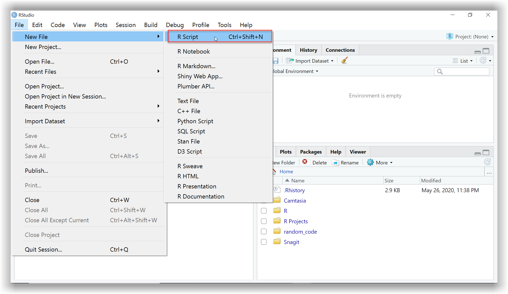

# R is like a calculator
7 + 3[1] 10In case you don’t already have R and RStudio installed, follow the instructions here to get set up. If you already have R and RStudio installed, you can skip this.
Now that you have access to RStudio you can start using it to experiment with the exercises we cover this week. Throughout the materials, there are chunks of code for you to run. Try copying the code from these chunks directly into RStudio to reproduce the examples and continue your explorations. It is through experimentation that we learn most effectively.
As a quick reminder, the image below shows you where to go to open up a new script in RStudio. Then you can start writing your own code and running it.

RStudio has a built-in Help tab. To use the Help tab, move your cursor to something in your code and press F1 - this will show you the definition and some examples.
The Help tab is only really useful if you already know what you are looking for but can’t remember how it worked exactly. For finding help on things you have not used before, it is best to Google it. R has about 2 million users so someone somewhere will have had the same question or problem.
When we import data, R remembers the data and stores it in the Environment tab. But this is not really where our data lives. For anything important that we want to load in and save, we write the code in our scripts so that we can bring back the data and objects into our environment whenever we want to by rerunning it - reproducibility in action!
It’s good practice to clear out our environment frequently, and always before starting new work (a bit like spring cleaning) to make sure there are no old objects we no longer need cluttering up space. If we didn’t clear the environment, we might accidentally end up using older data we thought had been updated.
To clear our environment we Restart R and it only takes a second!
To restart R you can do one of the following:
Use the keyboard shortcut Ctrl+Shift+F10
Use the dropdown menu Session -> Restart R
————–
Note: RStudio has a default option for saving your environment, but that is not best practice anymore. Make sure that you have changed to the following setting (you only need to do this once):
Go to Tools -> Global Options -> General and set “Save .RData on exit” to Never. This does not mean you can’t or shouldn’t save your work in .RData/.rda files, but it is best to do it consciously and load exactly what you need to load, rather than letting R always save and load everything for you, as this could also include broken data or objects.
Here are some of the main keyboard shortcuts in R you may find useful to begin with:
| I want to… | Windows | Mac |
| Restart R Session | Ctrl+Shift+F10 | Cmd+Shift+F10 |
| Run current line/selection | Ctrl+Enter | Cmd+Enter |
| Run the whole script | Ctrl+Shift+S | Cmd+Shift+S |
| Insert %>% | Ctrl+Shift+M | Cmd+Shift+M |
| Reformat selection | Ctrl+Shift+A | Cmd+Shift+A |
| Comment/uncomment (multiple) lines of code | Ctrl+Shift+C | Cmd+Shift+C |
| Open up Help tab on function | F1 | F1 |
| Go to the end of the document | Ctrl + End | Cmd + down arrow |
RStudio has a great way of helping you to keep all your analysis files together so that R can access them easily. You can do this by creating an RStudio project for each of your data analysis projects. The following video shows you how (switch to full screen to see the video better):
When using R, you will predominantly be working with your own data which you must first load in before you can start exploring it, and we’ll be covering how to do this in-depth in the next topic. But to begin with, let’s see how R works.
Now that you have RStudio up and running, try copying the code from above these boxes and running them yourself in a new script.
Can you remember what the # symbol does?
The # symbol allows us to add comments by letting R know not to run this line of text as R code.
What if we want to save the value of this calculation to refer to at a later date?
To save our value, we have to create an object, a, and then assign the value to the object using the = sign or alternatively, you could use these <- symbol. They are both called assignment operators. In R there are often multiple ways of doing the same thing as you will continue to discover, and which you choose often depends on personal preference.
My preference is for the <- because (a) it shows the direction of assignment (right to left) and (b) is distinct from = which can also be used within functions for specific arguments. But both work!
Try adding and running the following code in your script. Why do you think we have to type a again on its own underneath?
It’s always worth remembering that in R:
if you save an object, then the value does not get printed (displayed on the screen)
if you print an object, then the value does not get saved
In our example above, the equals <- sign tells R to give the object on the left of the sign the value of whatever is on the right of the sign, and the value gets saved. Underneath, where only a is typed, we are also printing it so that you can see the result. In this code chunk, we are both saving and printing.
But in our first example, there was no <- sign so we were only printing the value, not saving it too.
Note: When working in RStudio, when you save a value to an object it will appear in the Environment tab. If you haven’t given your values or data a name using an assignment operator, it won’t appear in the Environment tab.
You can name objects in R anything that you like… well almost anything. There are a few rules about names in R:
No spaces - spaces inside a name are not allowed (the spaces around the <- don’t matter):
lucky_number <- 5 ✔ lucky number <- 5 ❌
Names must start with a letter:
lucky_number <- 5✔1lucky_number <- 5` ❌
Case sensitive:
lucky_number is different from Lucky_Number
Reserved words - there is a set of words you can’t use as names, including: if, else, for, in, TRUE, FALSE, NULL, NA, NaN, function (Don’t worry about remembering these, R will tell you if you make the mistake of trying to name a variable after one of these).
For more information on naming objects in R, check out this blog post.
Let’s go one step further and save each of the values in our previous calculation ( 7 + 3 ) as objects too.
In the code chunk below you will see that we’ve added some more calculations. These include the most basic arithmetic operators we’ll be using and as you can see, R uses standard symbols.
Why might we want to save each of our values as objects first?
# assign the values "7" and "3" to objects "b" and "c"
b <- 7
c <- 3
# arithmetic operators
add_opr <- b + c
subtract_opr <- b - c
multiply_opr <- b * c
divide_opr <- b / c
# print out the results
add_opr[1] 10[1] 4[1] 21[1] 2.333333Saving our values as objects allows us to carry out various calculations using one set of saved values. If we want to change the value of b or c, we can do so without having to change the values in all subsequent calculations too.
Why not try it just now? Change the value of b to 9 ( b <- 9 ) and rerun the chunk to see your updated results.
Remember, the name on the left of the <- is the object name. Now change the name of one of the objects, but make sure you also change the name in the code for printing the results too.
All of R is just an extension of these types of processes: applying more complex functions (calculations) across more complex objects.
It’s important to appreciate that objects can be more than just single numbers. They can be entire spreadsheets, which in R tidyverse are known as tibbles. These are the types of objects you will predominantly be working with when analysing healthcare data.
You can find further examples of the arithmetic/mathematical operators in R via the introverse package documention.
As well as performing calculations with arithmetic operators, you can also ask R things, such as is “2 greater than 10?”. In such cases, as you are asking R a questions, the output returned (or answer) is TRUE or FALSE. Another set of operators you will use frequently in R are relational operators, which are great for comparing values and for creating subgroups in your data or excluding outliers.
Note: You can find a full list of the operators we use on the HealthyR Quick-start cheatsheet, also listed in Further Resources) for this week.
These operators allow us to ask questions about our data. For example, are values in a column greater than, less than or equal to a reference value?
The symbols used by different programs and languages for logical operators vary more widely than for arithmetic operators, let’s see what R uses, examples are shown in the following code chunk:
[1] FALSE[1] TRUE[1] FALSE[1] TRUE[1] TRUE[1] FALSEThe == is very easily and commonly confused with the =. If you get an error when trying to compare values to see if they are equal, there is a good chance you have forgotten to put in the extra =.
Printing out a TRUE or FALSE value might seem a bit obscure, but these relational or comparison operators are really useful for filtering data and we’ll use them frequently throughout this course.
A final set of operators that you will find useful when working with data in R is the logical set of operators. These work in a very similar way to the relational operators: R compares values and returns TRUE or FALSE as the output. You can think of logical operators are asking R to compare 2 or more things.
You can find further examples of the logical operators in R via the introverse package documentation.
Let’s see how this works:
# assign multiple values to the object "year"
year <- c(2000, 2001, 2002, 2003, 2004)
# check "year" values to see if they are equal to 2000 OR 2001
year == 2000 | year == 2001[1] TRUE TRUE FALSE FALSE FALSE[1] TRUE TRUE FALSE FALSE FALSE[1] FALSE FALSE TRUE FALSE FALSE[1] TRUE TRUE FALSE TRUE TRUELike many other types of analysis, database, or spreadsheet software, R needs to know what the variable type (or data type) of each column is. The types we’ll be using most frequently are characters, factors, and numbers.
Characters (sometimes referred to as strings or character strings) in R are letters, words, or even whole sentences (an example of this might be free text comments). We can convert objects or values to character data type using the function as.character(). Characters are displayed in-between "" (or '').
Factors can be thought of as slightly fussy characters. They’re fussy because they have something called levels. Levels are all the unique values this variable could take e.g. if we have a column with data on sex, there might be two levels, “Male” and “Female” or there might be three levels if there was an option to specify “Other” too. Using factors rather than just characters can be useful because:
The values that factor levels can take is fixed. For example, if the predefined levels of your column called sex are “Male” and “Female” and you try to add a new patient where sex is just called “F” sex was stored as a character data type rather than a factor, R would have no problem with this and you would end up with “Male”, “Female”, and “F” in your column.
Levels have an order. By default, R sorts things alphabetically, but if you want to use a non-alphabetical order, e.g. if we had a body_weight variable where we want the levels to be ordered - “underweight” - “normal weight” - “overweight” - we need to make body_weight into a factor. Making a character column into a factor enables us to define and change the order of the levels.
These are huge benefits, especially as a lot of medical data analyses include the comparison of different risks to a reference level.
In R, we specify numbers using the as.numeric() function. Sometimes numerics are further differentiated based on whether they have decimal places or not. Integer stands for a number without decimal places, whereas double would have decimal places.
Dates can be confusing, they can appear in many different formats, and in R they can look very similar to the character data type because they too are displayed between inverted commas ( "" ). Once we let R know that our variable is a date however, it can do some clever things as we’ll discover later.
You can find out more about how R reads in dates and also more examples on all these other data types by going to Chapter 2.2 in R for health data analysis.
x, y, with values 3, 10.x+y).calc.In the same script, create a new variable called z and assign it the value of 5. Then create a new variable called calc2 and assign it the value of calc + z. Print out the value of calc2 to view the output.
Create a new variable called calc3 and assign it the value of calc2 - calc. Print out the value of calc3 to view the output.
Create a new variable called calc4 and assign it the value of calc3 * calc2. Print out the value of calc4 to view the output.